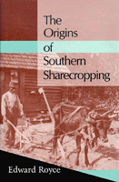

Revised perspective on sharecropping
Revised perspective on sharecropping


 Revised perspective on sharecropping
Revised perspective on sharecropping

|  |
The Origins of Southern SharecroppingEdward Roycecloth EAN: 978-1-56639-069-9 (ISBN: 1-56639-069-9) |
Vivid primary accounts of post-Civil War life by planters and freed slaves complement this study of the rise of southern sharecropping. Edward Royce employs both historical and sociological methods to probe the question of why slavery was replaced by sharecropping rather than by some other labor arrangement. His detailed analysis illuminates conflicts between labor and capital as one group struggles to preserve the plantation system while the other pursues a quest for land and autonomy.
Royce contends that southern sharecropping occurred through a "constriction of possibilities," that it was shaped by default rather than orchestrated by economic reconstruction by white landowners and black laborers.
Highlighting the conflict-ridden nature of the process of social change, The Origins of Southern Sharecropping includes rich descriptions of the plantation system and gang labor, the freed slaves' dream of forty acres and a mule, the black colonization movement, the Freedman's Bureau, and racial relations after the war.
Acknowledgments
1. Southern Sharecropping and the Constriction of Possibilities
2. Gang Labor and the Plantation System
3. Forty Acres and a Mule
4. Economic Reconstruction and Southern Immigration
5. Economic Reconstruction and Black Colonization
6. The Rise of Southern Sharecropping
Notes
Index
Edward Royce is Associate Professor of Sociology at Rollins College in Florida.
Labor Studies and Work
History
African American Studies
Labor and Social Change, edited by Paula Rayman and Carmen Sirianni.
Labor and Social Change, edited by Paula Rayman and Carmen Sirianni, includes books on workplace issues like worker participation, quality of work life, shorter hours, technological change, and productivity, as well as union and community organizing and ethnographies of particular occupations.
© 2015 Temple University. All Rights Reserved. This page: http://www.temple.edu/tempress/titles/447_reg.html.